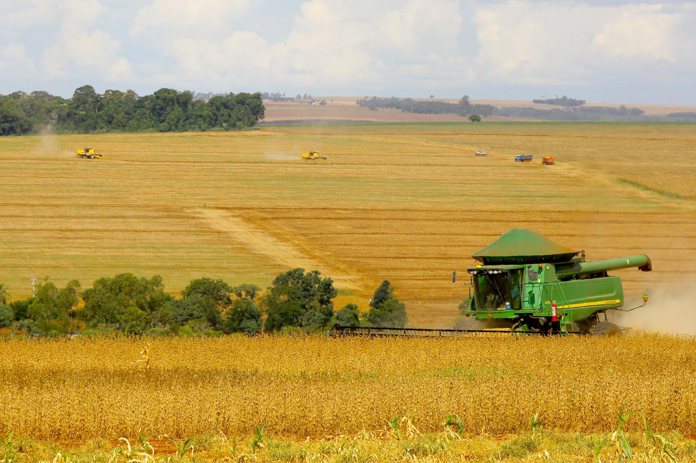

O Paraná é um dos principais estados agrícolas do Brasil, conhecido por sua produção diversificada que inclui grãos, hortaliças, frutas, e muito mais. A agricultura no estado é marcada pelo uso de tecnologias avançadas e práticas sustentáveis, contribuindo significativamente para a economia local e nacional.
Os principais produtos agrícolas do Paraná são soja, milho, trigo, café e feijão. Além disso, a pecuária, especialmente a produção de carne bovina e de frango, é outra atividade agrícola importante na região.
A agricultura é responsável por uma grande parte dos empregos no Paraná, empregando diretamente milhares de trabalhadores nas zonas rurais e indiretamente em indústrias ligadas ao setor agrícola.
O Paraná é um dos maiores produtores de alimentos do Brasil, garantindo a disponibilidade de produtos essenciais, como grãos e carne, tanto para o mercado interno quanto para exportação.
O estado exporta uma vasta quantidade de produtos agrícolas, como soja, milho, carne de frango e café, para mercados internacionais, contribuindo significativamente para a balança comercial do país.